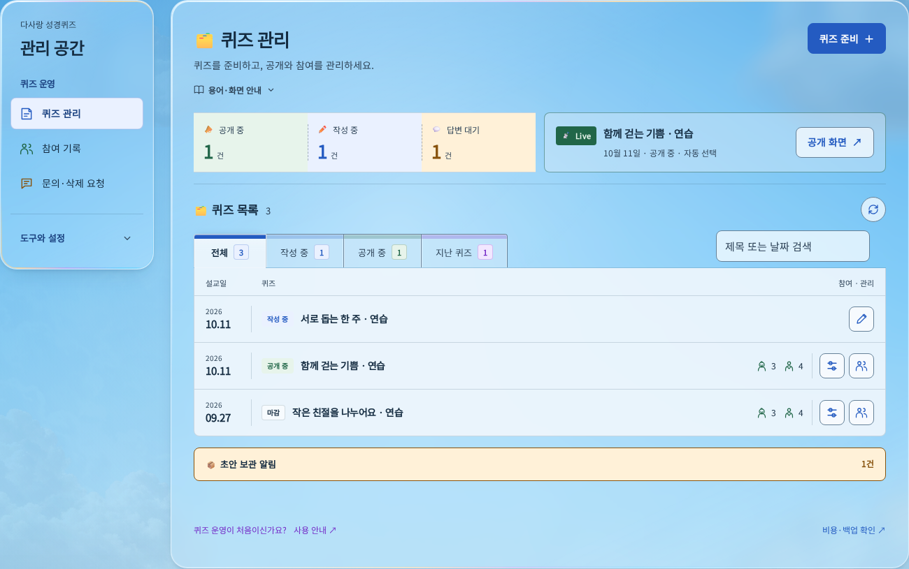
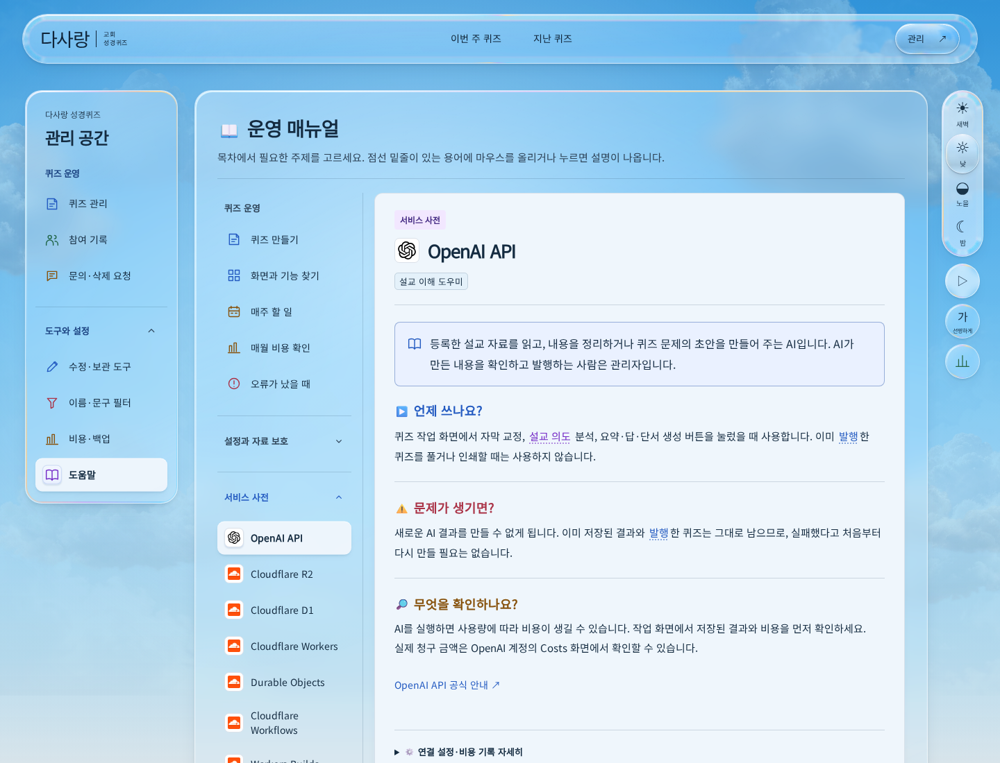

관리자 실제 화면과 생성 시안
2026년 10월 14일 적용 화면입니다. 지정한 문의 시안에 맞춰 선택한 인덱스만 상단 색 띠와 본문 바탕을 공유합니다. 사이드바와 도움말 목차는 같은 선택 면을 사용하고, 도움말은 투명한 목차와 불투명한 읽기 면으로 나눴습니다. 실제 React UI에 연습 자료를 표시해 촬영했으며, 이미지를 누르면 원본을 크게 볼 수 있습니다.
낮·밤 버튼으로 실제 화면을 바꿔 볼 수 있습니다. 생성 시안과 서비스 사전 예시는 낮 배경을 유지합니다.
퀴즈 관리
현황과 Live의 5:5 비율과 세 가지 바탕색을 유지했습니다. 선택한 인덱스만 선명한 상단 강조선을 쓰고, 다른 탭의 진한 테두리와 색 띠는 없앴습니다. 탭의 윗변과 글자 높이는 선택 전후에도 같습니다. 왼쪽 메뉴는 짧은 그림자와 윗면 반사가 있는 선택 배경을 사용합니다.
실제 화면 · 연습 자료
참여 기록
행을 펼치면 왼쪽에는 답안과 코멘트, 오른쪽에는 처리 폼이 나타납니다. 점수와 상태를 작은 박스로 구분하고, 실제 제출값은 입력한 칸을 파랑·빈칸을 호박색으로 표시합니다.
문의·삭제 요청
카테고리끼리 틈 없이 맞닿고, 선택한 카테고리와 목록이 같은 바탕으로 이어집니다. 접힌 행에는 이름·분류·상태·날짜와 한 줄 미리보기가 보입니다. 펼치면 전체 원문과 상태·답변 폼을 확인할 수 있습니다.
도움말 읽기 화면
새 시안의 선택 면과 읽기 바탕을 실제 도움말에 적용했습니다. 왼쪽 목차와 바깥 창은 투명하며, 본문은 불투명한 바탕에서 읽습니다. 실제 촬영본은 첫 화면 부분이고 전체 문서는 앱에서 이어 읽을 수 있습니다.
서비스 사전의 실제 적용 화면
